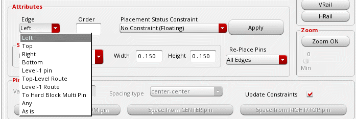
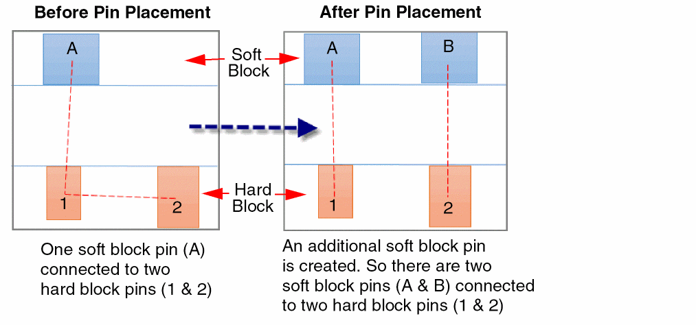
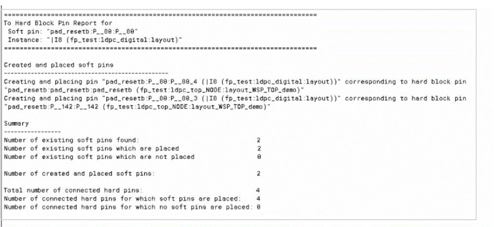

Placing Pins that Are Connected to Hard Block Pins
There may be situations where one top-level or level-1 pin is connected to two or more hard block pins. To place such pins:
-
From the layout window menu bar, choose Floorplan – Pin Planner.
The Pin Placement form is displayed. - Select the soft block or top-level pin from the pin table.
-
Choose To Hard Block Multi Pin from the Edge drop-down list.
 - Choose No Constraint (Floating) from the Placement Status Constraint drop-down list.
- Click Apply.
The Connectivity column in the pin table annotates whether pins are connected to buried pins or multiple hard block pins.
Additional pins are created in the soft block (or at the top-level) to match the number of pins in the hard block. Therefore, each soft block or top-level pin is connected to a corresponding hard block pin, as shown below:

A summary report is displayed in the CIW that provides detailed information about hard block pin placement:

The summary report includes the following information:
- A list of messages generated while placing soft block pins that are connected to multiple hard block pin.
- Number of soft pins found.
- Number of soft block pins that are aligned to hard block pins.
- Number of soft block pins that could not be aligned to hard block pins.
- Number of new soft pins created.
- Number of hard pins found.
- Number of hard block pins to which soft block pins have been aligned.
- Number of hard block pins to which soft block pins could not be aligned.
Related Topics
Planning Placement of Top-Level and Level-1 Pins
Return to top